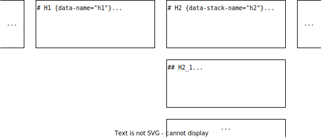

Markdown RevealJS
 xieby1
xieby1
üéâ2022.06.10
1 Intro
A Simple Easy Converter
Markdown ➡ Reveal.js
- Based on Pandoc
- Auto-generated TOC
- Touch-device friendly
- Header footer supported
1.1 Demo
This README.md is converted to revealjs, see it here.
1.2 How it works
Bash script + Template file + Pandoc
It’s simple and esay!
2 Installation
2.1 First
git clone --recurse-submodules https://github.com/xieby1/markdown_revealjs2.2 Second
Note: Ubuntu 22’s apt-installed pandoc is too old.
üëçThat‚Äôs it!
üéäYou‚Äôve installed markdown_revealjs!
2.3 Third (Optional)
Add revealjs.sh to your PATH env.
ln -s <path/to>/revealjs.sh /usr/bin/
# or /usr/local/bin/, or ~/.local/bin/3 Quick Start
3.1 First Page
Add the metadata (title, author, date)
to top of your markdown file.
These info will become the first page of your slide.
% markdown_revealjs !
% xieby1
% 2022.06.243.2 Basic Syntax
| syntax | meaning |
|---|---|
| 1st-level header | New horizontal slide |
| 2nd/3rd/4th/5th/6th-level header | New vertical slide |
3.3 Convert!
$ revealjs.sh <input.md>
# will generate input.htmlüê±
It’s simple and easy, right?
3.4 daemonize
$ revealjs.sh -d <input.md>
# will auto refresh browser when input.md is changed4 Themes
Here are predefined themes (template),
just download the source markdown,
and revealjs.sh xxx.md!
Enjoy the themes belowüéâ
üîΩüîΩüîΩ
4.1 开芯院
4.2 龙芯
4.3 微处理器研究中心
4.4 国科大计算所答辩
5 Advanced Syntax
Sorted in alphabet.
6 Alignment
All elements
in Reveal.JS
are centered
by default.
üò∫
6.1 Left Alignment
If you prefer to left align
all children elements.
Add these styles
to the parent element.
üòΩ
:::{style="display:inline-block; text-align:left;"}
things here are all
left aligned
!
:::7 Ascii Art with CJK
Auto detect and gracefully handled mono fonts width,
where CJK and Latin characters are mixed
┌─────────────┐
│no more ┌────┼────┐
│ │不会│!!!!│
│mismatch│错位│，。│
└────────┼────┘！！│
└─────────┘8 Auto Animate
8.1 Code
```python {data-id="code-animation" data-line-numbers=""}
class Miao:
def __init__(self):
pass
```class Miao:
def __init__(self):
pass8.2 Code
```python {data-id="code-animation" data-line-numbers=""}
# This is a class
class Miao:
# This is a func def
def __init__(self):
pass
```# This is a class
class Miao:
# This is a func def
def __init__(self):
pass9 Backgrounds
Did you notice that every page has a default background?
9.1 Default Backgrounds
Set default backgrounds in yml front matter, like
title-slide-background-image: <URL>
toc-slide-background-image: <URL>
level1-slide-background-image: <URL>
level2-slide-background-image: <URL>
level3-slide-background-image: <URL>
background-size: <CSS background-size>9.2 Per-Slide Backgrounds
Set per-slide background, like
# Per-Slide Backgrounds {data-background-color="LightPink"}More info about background see:
- RevealJS: backgrounds
- Pandoc Extension: header_attributes
10 Fragments
- RevealJS: fragments
10.1 Multi Lines
- Pandoc Extension: fenced_divs
::: {.fragment}
Your content here
:::10.2 One Line
- Pandoc Extension: bracketed_spans
It‚Äôs in one line! üê± üê∂ üêπ
[It's in one line!]{.fragment}
[üê±]{.fragment}
[üê∂]{.fragment}
[üêπ]{.fragment}11 Headings and slides
Normally, each level of heading will start a new slide.
11.1 Heading not start a new slide
If you want a heading that doesn a new slide, like this
Level-3 Heading!
Just use html heading!
<h3>Level-3 Heading!</h3>11.2 Force starting a new slide
If you want to start a new slide without headings.
Just use the markdown horizontal break ---, like
this
Force starting a new slide!
12 Not Displaying Heading and Chrome
12.1 Not Displaying This Heading
## Not Displaying This Heading {.noheading}12.2 Not Displaying The Chrome in This Slide
## Not Displaying The Chrome in This Slide {.nochrome}12.3 Not Displaying Both heading and Chrome
## Not Displaying Both heading and Chrome {.noheading .nochrome}13 Include Files
13.1 include files normally
This file is include by
```{.include}
./included.md
```More details: https://github.com/pandoc/lua-filters/blob/master/include-files/include-files.lua
13.2 include files in code block
``` {include="./helloworld.c"}
```#include <stdio.h>
int main(void);
int main(void)
{
printf("Hello, world! \n");
return 0;
}
More details: https://github.com/pandoc/lua-filters/blob/master/include-code-files/include-code-files.lua
13.3 example: Chart.js
include a chart.js plot
``` {.include}
./plots/chartjs.html
```13.4 example: Plotly.py
include a plotly.py plot
``` {.include}
./plots/plotlypy.html
```14 Inline SVG
You can specify scale=<num>
The image will be scaled to <num>
{scale=1.5}14.1 Inline SVG another example
You can also specify width=<len> or
height=<len>
The image will be scaled to width/height with ratio kept
{height=300px}14.2 clip
You clip the image by clip=“top% right% bottom% left%”
{height=300px clip="50% 100% 100% 50%"}The clipped part will be applied gradient effect automatically!
14.3 gradient
The default gradient range is 10% of the clipped border.
You can adjust gradient range percentage by
gradient=xx
for example no gradient:
{height=300px clip="50% 100% 100% 50%" gradient=0}15 Label and Link
You can label a slide by adding a name to its heading
# Label and Link {#label_and_link}15.1 Link
Then you can go back to the labeled slide ⬆️ Label and Link⬆️ .
[Label and Link](#label_and_link)16 Localization (Offline mode)
markdown_revealjs can be used completely offline!
16.1 Download this repo
# download by git
git clone --recurse-submodules https://github.com/xieby1/markdown_revealjs
# or download the source code without .git
wget https://github.com/xieby1/markdown_revealjs/archive/master.tar.gz
tar xzf master.tar.gz16.2 Run revealjs.sh against local repo
Assuming the path to the local repo is <REPO>
REPOROOT=<REPO> <REPO>/bin/revealjs.sh <MD File>Then you can view your slides completely offline!
17 Long Table
Bother by long table?
Then use wrap your long table
with .longtable
like below
::: {.longtable style="height: 300px;"}
<your long table here>
:::17.1 Example
| This | is | a | long | vertical | table |
|---|---|---|---|---|---|
| 1 | 2 | 3 | 4 | 5 | 6 |
| 2 | 2 | 3 | 4 | 5 | 6 |
| 3 | 2 | 3 | 4 | 5 | 6 |
| 4 | 2 | 3 | 4 | 5 | 6 |
| 5 | 2 | 3 | 4 | 5 | 6 |
| 6 | 2 | 3 | 4 | 5 | 6 |
| 7 | 2 | 3 | 4 | 5 | 6 |
| 8 | 2 | 3 | 4 | 5 | 6 |
| 9 | 2 | 3 | 4 | 5 | 6 |
| 10 | 2 | 3 | 4 | 5 | 6 |
| 11 | 2 | 3 | 4 | 5 | 6 |
| 12 | 2 | 3 | 4 | 5 | 6 |
| 13 | 2 | 3 | 4 | 5 | 6 |
| 14 | 2 | 3 | 4 | 5 | 6 |
| 15 | 2 | 3 | 4 | 5 | 6 |
| 16 | 2 | 3 | 4 | 5 | 6 |
| 17 | 2 | 3 | 4 | 5 | 6 |
| 18 | 2 | 3 | 4 | 5 | 6 |
| 19 | 2 | 3 | 4 | 5 | 6 |
| 20 | 2 | 3 | 4 | 5 | 6 |
18 Math
Write latex math equation like this
$$
F = G \frac{m_1 \times m_2}{R^2}
$$\[ F = G \frac{m_1 \times m_2}{R^2} \]
19 Multiple columns
- Pandoc Extension: fenced_divs
- Builtin CSS class: container and col
19.1 Two-column Example
It is two columns!
This is column 1
This is column 2
::: {.container}
:::: {.col}
Column 1
::::
:::: {.col}
Column 2
::::
:::You can add as many columns as possible.
19.2 Multiple-column Vertical Alignment (Top)
col1
- Default is center alignment
- This is top alignment
col2
Top alignment code:
::: {.container style="align-items: flex-start;"}
:::: {.col}
col1
::::
:::: {.col}
col2
::::
:::19.3 Multiple-column Vertical Alignment (Bottom)
- Default is center alignment
- This is bottom alignment
col1
Top alignment code:
::: {.container style="align-items: flex-end;"}
:::: {.col}
col1
::::
:::: {.col}
col2
::::
:::col2
20 Pandoc Options
Because markdown_revealjs is just
a shell wrapper of pandoc.
You can override them!
See pandoc available options by pandoc -h
20.1 Metadata in .md file (lower priority)
Override in md file metadata, like
pandoc-opts: "<PANDOC OPTIONS>"Example:
---
title: Markdown RevealJS
author: xieby1
date: 2022.06.10
...
pandoc-opts: "--toc=false"
---20.2 CLI Options (higher priority)
Override by appending reveal.sh command, like
reveal.sh <MD File> <PANDOC OPTIONS>Example:
reveal.sh README.md --toc=false21 Slide Number End
Slides after the specific slides
can be excluded from the total slide number.
Think about a situation where,
in your PhD defense,
there are several backup slides at the end.
You do not want them counted to the total slide number.
21.1
.slide-count-end
Add .slide-count-end to the heading of the slide,
# Heading {.slide-count-end}21.2 Example
In this README, .slide-count-end is added to slide QnA.
Therefore, the slides after QnA, like Backup Slides
are not counted to total slide number
22 TOC (resident)
See,
some key TOC entries are resident at the top of the slides?
22.1 Two Types of Attributes
- Top slide without subsequent vertical slides
data-name="<TOC_Entry_Name>"
- Top slide with subsequent vertical slides
data-stack-name="<TOC_Entry_Name>"
- Example:
...
# H1 {data-name="h1"}
# H2 {data-stack-name="h2"}
## H2_1
...
22.1.1 Two Types of Attributes: details
22.2 Hide Resident TOC
Want to hide resident TOC in specific slides?
Add data-sminvisible=true to the slide heading, like
## Hide Resident TOC {data-sminvisible=true}
...22.3 More Example
My 国科大计算所答辩 theme use resident TOC
22.4 Want to know more?
Resident TOC is implemented based on revealjs plugin:
23 TOC (full)
23.1 TOC Depth
Default TOC depth is 2.
You can override it in yml front matter, like
toc-depth: 123.2 TOC Columns
The number of TOC columns is controlled by yml front matter:
toc-widthfor TOC widthtoc-column-widthfor TOC’s column widthtoc-marginfor TOC’s margin
Therefore, by adjusting these two variable,
you can control how many TOC columns you have.
23.2.1 Default Values (3-column TOC)
- Remember the default slide width is 1200px.
- The default
toc-column-widthis290px - The default
toc-marginis0 0 0 0 - Thus a 3-column toc is presented.
23.2.2 1-column TOC
Here is an example of 1-column TOC
toc-width: 1200px
toc-column-width: unset
toc-margin: 0 400px24 QnA
- Problems?
- tips?
- Advice?
New issue and pull request is welcome!
25 Backup Slides
Test the functionality of Slide Number End.
From this slide on,
the total slide number ends counting.
25.1 Level-2 Backup Slides
üê±
25.2 Another Level-2 Backup Slides
üêà
 Github
Repo
Github
Repo